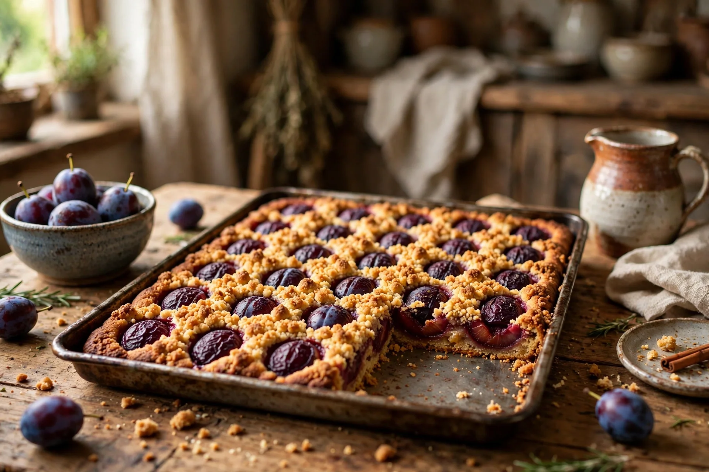

Home › Cakes & Tortes
Cakes & Tortes Recipes
For the coffee table, Sunday afternoon or the big celebration: Anna's favorite cakes and tortes – from the quick tray bake to the festive layer cake, always with exact steps and honest tips.
 For Guests
For GuestsSchwarzwälder Kirschtorte (Black Forest Cake)
She is the queen of cakes: chocolate sponge, juicy sour cherries and clouds of whipped cream.
 Classic
ClassicKäsekuchen (Classic German Cheesecake with Quark)
A slice of cheesecake belongs on every good coffee table – creamy, not too sweet and with a hint of lemon.

Sheet cakeZwetschgenkuchen (Plum Sheet Cake)
When the plums are ripe, there is no holding back in our house: a whole tray of plum cake goes into the oven.
 Classic
ClassicDonauwelle (Danube Wave Cake)
Light batter, dark batter, cherries sunk in between – and on top buttercream and chocolate with the famous …
 Classic
ClassicBienenstich (Bee Sting Cake)
A crisp almond crust on top, fluffy yeast dough underneath and a delicate vanilla cream in between – for …
 Classic
ClassicApfelkuchen (Sunken Apple Cake)
This sunken apple cake is the cake of my childhood: a moist sponge with apple wedges on top that sink in …
 For guests
For guestsTiramisu (Classic Tiramisu)
Tiramisu is the dessert that makes guests happy: creamy mascarpone, ladyfingers dipped in coffee and a …
Discover more
Browse Anna's other categories too – from the cookie classics to the cookbooks from her shelf.